Along Lake Bled’s grassy shore
Scrub or play a rightward journey. The broad grass lane moves fastest; the Julian Alps, forested shore, castle and island drift at different speeds behind the party.
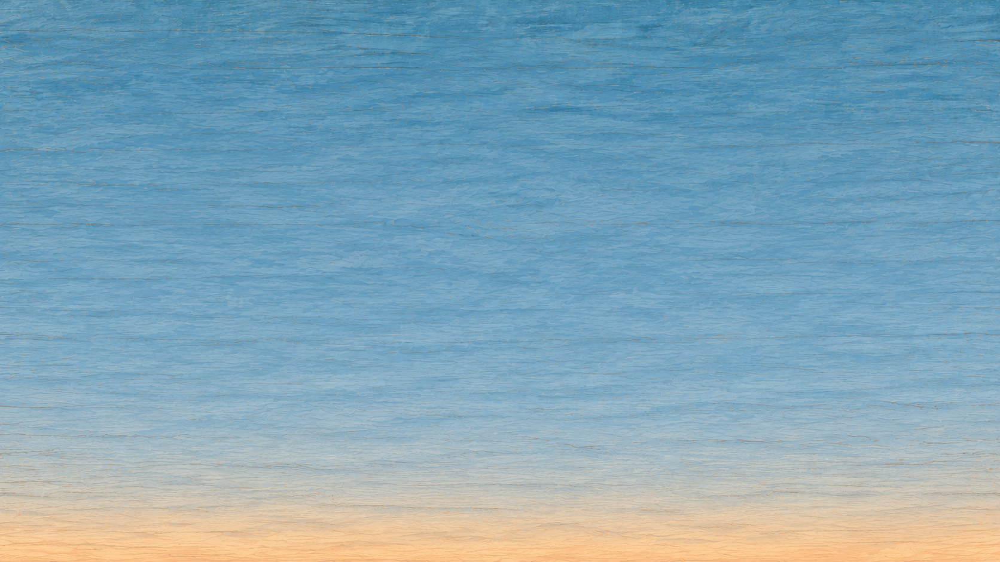
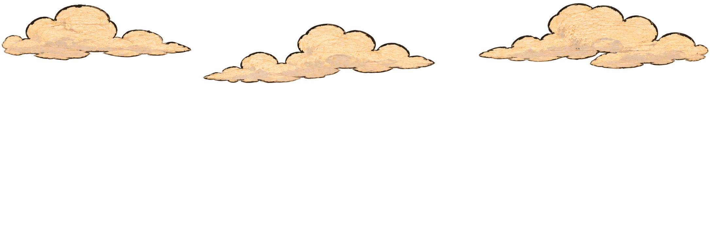
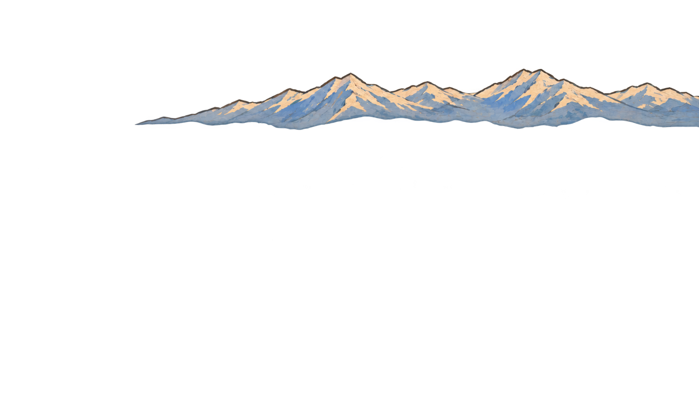
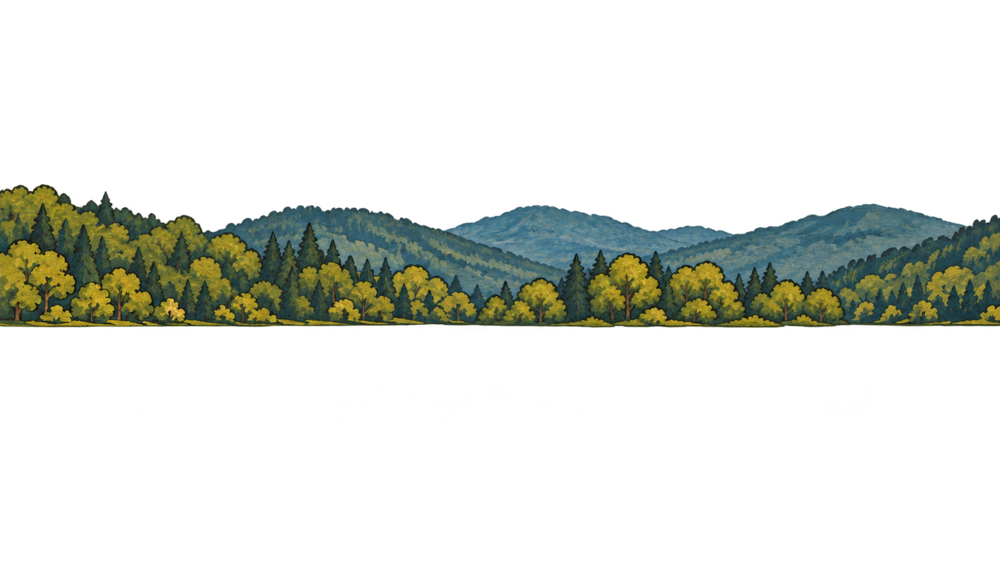
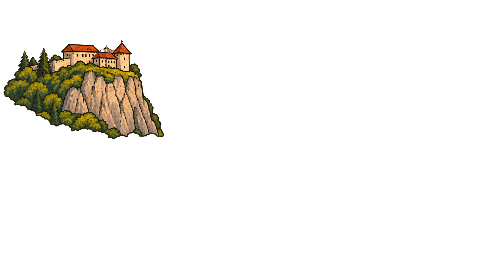
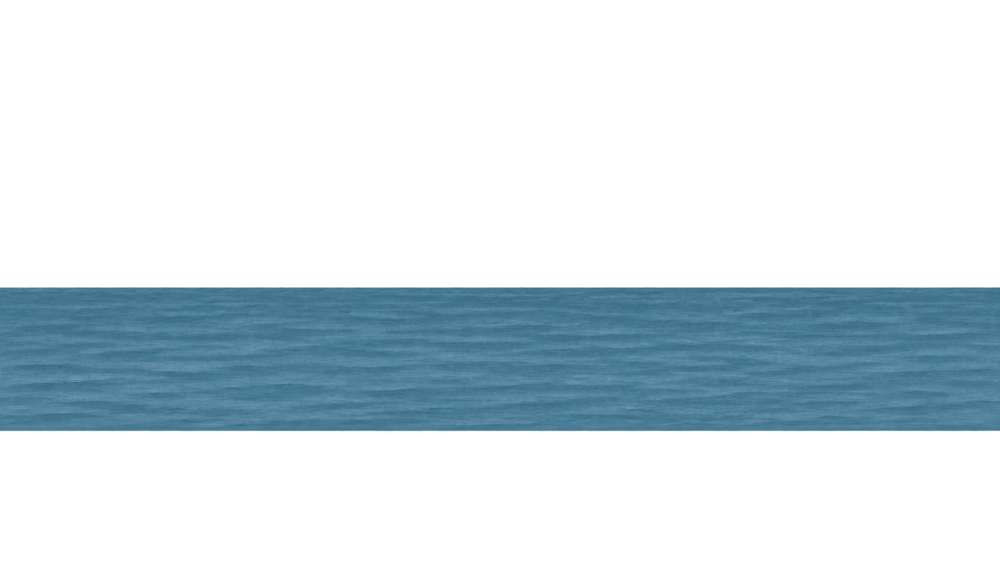
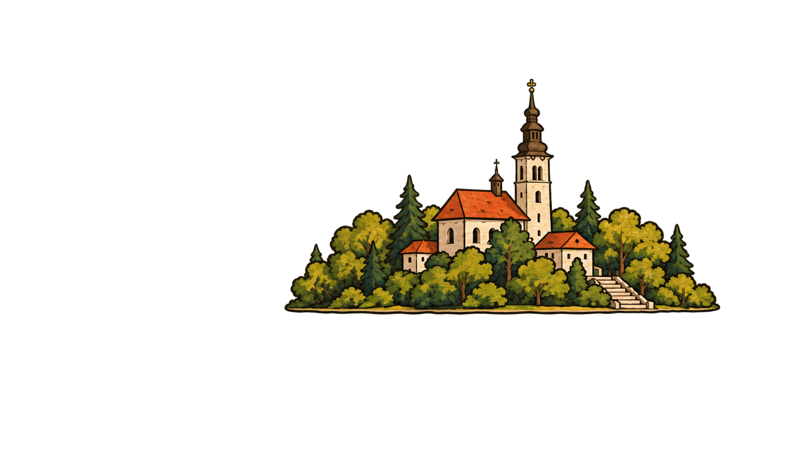
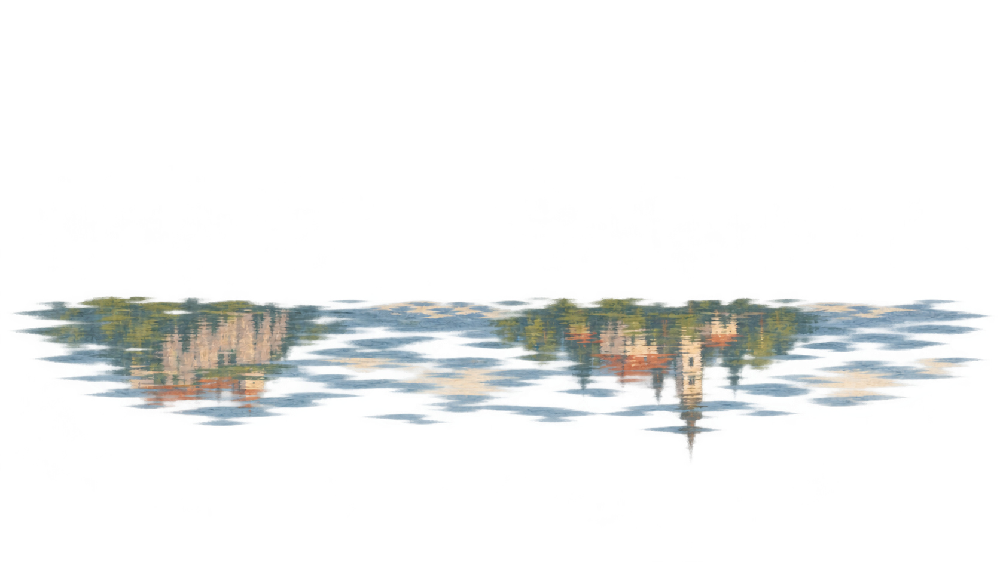
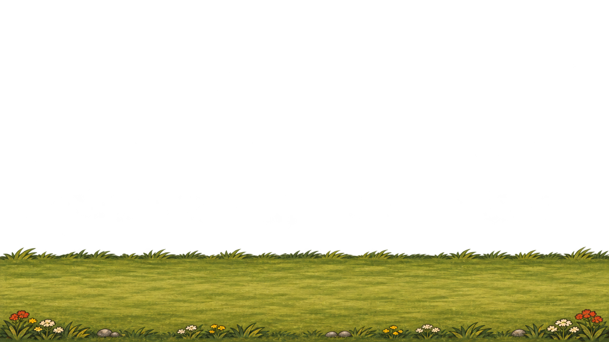
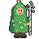
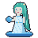